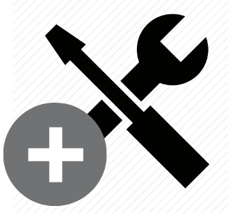

<modal-header title="Cadastrar recurso"></modal-header>
<ion-content color="tertiary">
  <div class="container">
    <form [formGroup]="registerResourceForm" padding-top class="box">
      <div text-center>
        
      </div>
      <ion-grid>
        <ion-row>
          <ion-col>
            <ion-input formControlName="name" placeholder="Recurso">
            </ion-input>
            <ng-container *ngFor="let validation of validationMessages.name">
              <div class="error-message"
                *ngIf="registerResourceForm.get('name').hasError(validation.type) && (registerResourceForm.get('name').dirty || registerResourceForm.get('name').touched)">
                {{ validation.message }}
              </div>
            </ng-container>
          </ion-col>
        </ion-row>
      </ion-grid>
      <div padding-top padding-bottom text-center>
        <ion-button text-center (click)="submit()">Cadastrar recurso</ion-button>
      </div>
    </form>

    <div padding-top>
      <div *ngIf="resources" class="page-title">Recursos já cadastrados</div>
      <ion-list *ngFor="let resource of resources">
        <ion-item>
          <ion-label>{{resource.name}}</ion-label>
          <ion-icon (click)="removeResource(resource.id)" ios="ios-remove-circle" md="md-remove-circle" slot="end"></ion-icon>
        </ion-item>
      </ion-list>
    </div>
  </div>
</ion-content>